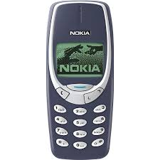
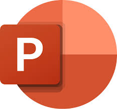
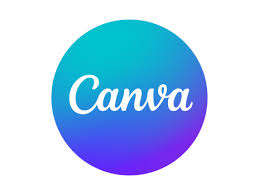

À propos du Projet
Ce projet avait pour but de nous faire apprendre à caractériser une entreprise d'informatique et à analyser ses pratiques et son fonctionnement. d'un point de vu administratif
Nous avons du utiliser des outils de veils et réaliser des fiches de caractérisation d'entreprise sur l'entreprise Nokia
Étapes Clés
- Mettre en place des outils de veilles
- Réaliser des fiches de caractérisation d'entreprise
- Préparer des diaporamas
- Présenter les résultats
Technologies Utilisées
Canva
outil de conception graphique
Trello
Tableau d'organisation type gantt
Google alert
Outil de veille informationnelle
PowerPoint
Outil de création de présentations
Résultats et Apprentissages
100%
recherche
8/10
Présentation orale
5/10
Travail d'Équipe
Ce que j'ai appris
Ce projet m'a permis de me familiariser avec des outils de veille informationnelle et à analyser les pratiques d'une entreprise. J'ai également appris à structurer et à présenter des informations de manière claire et efficace.
Galerie du Projet



×